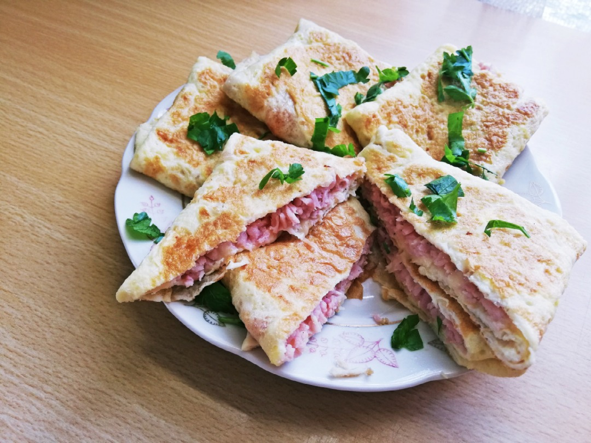

Сытное и вкусное блюдо "с изюминкой", которое можно приготовить всего из 3 ингредиентов, - аппетитные, нежные и румяные яичные конвертики с ветчиной и сыром. Отличная альтернатива привычной яичнице для завтрака или перекус на скорую руку. Попробуйте!
